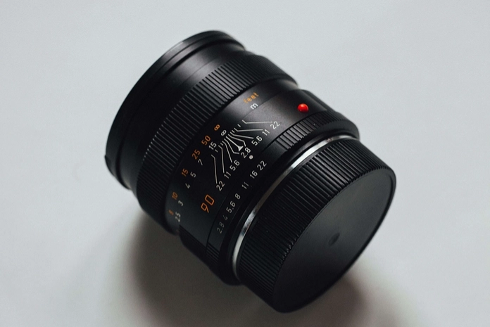
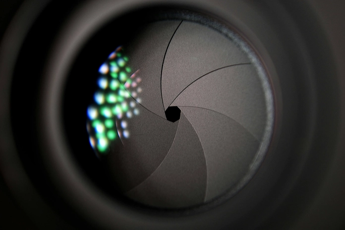

Camera Bodies

What is a DSLR Camera?
A DSLR (Digital Single-Lens Reflex) camera is a type of digital camera that combines the mechanics of a traditional single-lens reflex camera with digital imaging technology. It uses a mirror mechanism to reflect light from the lens up to an optical viewfinder, allowing you to see exactly what the lens sees. DSLR cameras are popular among photographers for their versatility, ability to swap lenses, superior image quality, and full manual control over settings like shutter speed, aperture, and ISO. They’re ideal for both beginners and professionals looking to capture high-quality images.
Advantages of a DSLR
DSLR cameras offer several advantages that make them a top choice for photographers. They provide exceptional image quality with larger sensors that capture more detail, even in low-light conditions. Their interchangeable lenses allow for versatility, from wide-angle landscapes to close-up portraits. DSLRs also feature advanced manual controls, giving photographers full creative control over settings like shutter speed, aperture, and ISO. With fast autofocus and minimal shutter lag, they’re excellent for capturing action shots. Additionally, the optical viewfinder offers a clear, real-time view of the scene, making it easier to frame and compose shots accurately.
Disadvantages of a DSLR
While DSLR cameras have many strengths, they also come with some disadvantages. They are often bulkier and heavier than other types of cameras, making them less convenient for travel or casual use. DSLRs can also be more expensive, especially when factoring in the cost of additional lenses and accessories. For beginners, the advanced features and manual controls may have a steeper learning curve. Additionally, maintaining a DSLR requires care, as the internal components like the mirror and sensor can be sensitive to dust and damage. Lastly, some photographers find the sound of the shutter mechanism distracting in quiet environments.

What is a Mirrorless Camera?
A mirrorless camera is a type of digital camera that, unlike a DSLR, doesn’t use a mirror to reflect light into an optical viewfinder. Instead, light passes directly through the lens to the image sensor, and the scene is displayed on a digital screen or electronic viewfinder (EVF). This design makes mirrorless cameras more compact and lightweight while still offering excellent image quality and advanced features. They also support interchangeable lenses, making them versatile tools for both amateur and professional photographers.
Advantages of a Mirrorless
Mirrorless cameras offer several advantages that make them a popular choice for photographers. Their compact and lightweight design makes them highly portable, ideal for travel and everyday use. With no moving mirror mechanism, they provide faster shooting speeds and quieter operation. Many mirrorless cameras feature advanced electronic viewfinders (EVFs), which allow you to see real-time exposure adjustments and other settings before taking a shot. They also deliver excellent image quality, rivaling DSLRs, and support interchangeable lenses for creative flexibility. Additionally, their modern design often includes cutting-edge technology like superior video capabilities and enhanced autofocus systems.
Disadvantages of a Mirrorless
Despite their many benefits, mirrorless cameras have some disadvantages. Their electronic viewfinders (EVFs) can drain battery life more quickly compared to the optical viewfinders of DSLRs, requiring photographers to carry extra batteries. In some models, EVFs may also lag in low-light conditions, making it harder to frame shots. While mirrorless cameras are catching up, their lens selection, particularly for niche photography needs, is sometimes more limited than that of DSLRs. Additionally, the smaller body design, while portable, can feel less ergonomic for users with larger hands or when using heavier lenses.

What is a Medium Format Camera?
A medium format camera is a type of camera that uses a larger sensor than standard full-frame or crop-sensor cameras, offering superior image quality and detail. These cameras are often used in professional photography, particularly for commercial, studio, and landscape work, where high resolution and dynamic range are essential. Medium format cameras capture more light and produce images with exceptional sharpness, colour accuracy, and depth, making them ideal for large prints or intricate editing. While they tend to be bulkier and more expensive, their performance is unmatched for photographers seeking the ultimate in image quality.
Advantages of a Medium Format
Medium format cameras offer unparalleled advantages for photographers seeking the highest image quality. Their larger sensors capture exceptional detail, providing ultra-high resolution, incredible sharpness, and superior colour accuracy. They also offer a wider dynamic range, allowing for better performance in challenging lighting conditions, such as preserving details in both shadows and highlights. The larger sensor creates a more pronounced depth of field, producing stunning subject isolation and a distinctive look that’s hard to replicate. These features make medium format cameras ideal for commercial, fine art, and landscape photography, where every detail matters.
Disadvantages of a Medium Format
Medium format cameras, while exceptional in image quality, come with notable disadvantages. They are significantly more expensive than other camera types, often putting them out of reach for casual photographers. Their larger size and weight make them less portable and less suited for on-the-go or handheld shooting. Medium format cameras also tend to have slower autofocus and shooting speeds compared to DSLRs or mirrorless cameras, making them less ideal for action photography. Additionally, the limited selection of lenses and accessories can be restrictive, and their files are much larger, requiring substantial storage and processing power.
Price Points
We recommend before buying brand new have a look at MPB for used camera bodies.
Camera Lenses
Focal Length and Uses
Photo by Markus Spiske from Pexels
What is a Focal Length lens?
Focal length refers to the distance, measured in millimeters, between a camera lens’s optical center and its sensor when the lens is focused on a subject. It determines the lens's angle of view and magnification, affecting how much of the scene is captured and how close subjects appear. A shorter focal length, such as 18mm, provides a wide-angle view, ideal for landscapes or group shots, while a longer focal length, like 200mm, offers a narrow, zoomed-in perspective, perfect for wildlife or sports photography. Understanding focal length helps photographers choose the right lens for their creative vision.
Types of Focal Length
Focal length lenses come in various lengths, each offering different perspectives and magnifications. Wide-angle lenses typically range from 14mm to 35mm, providing a broad field of view. Standard lenses, between 35mm and 50mm, offer a more natural perspective similar to what the human eye sees. Telephoto lenses, ranging from 70mm to 300mm or more, allow for greater magnification of distant subjects. Super-telephoto lenses, generally over 300mm, provide even higher levels of magnification for capturing subjects far away. Each focal length creates different effects and influences how the subject and background appear in the frame.
Focal Length Uses
Different focal length lenses are suited to specific photography styles and subjects. Wide-angle lenses (14mm to 35mm) are ideal for capturing expansive landscapes, architecture, or tight indoor spaces, as they can fit more into the frame. Standard lenses (35mm to 50mm) provide a natural, balanced view and are commonly used for street photography, portraits, and general-purpose shots. Telephoto lenses (70mm to 300mm or more) allow photographers to capture distant subjects, such as wildlife, sports, or candid portraits from afar, while compressing the background for a flattering effect. Macro lenses (50mm to 100mm) are designed for extreme close-ups, making them perfect for photographing small details, such as insects, flowers, or textures, with sharp clarity. Each lens type serves a unique purpose, helping photographers achieve their creative goals.

What is a Prime Lens?
A prime lens is a camera lens with a fixed focal length, meaning it does not zoom in or out. This simplicity often results in higher optical quality compared to zoom lenses, as there are fewer moving parts and less compromise in design. Prime lenses are known for their sharpness, wide apertures, and superior low-light performance. With common focal lengths like 35mm, 50mm, or 85mm, prime lenses are popular for portraits, street photography, and situations where a specific perspective is desired. While they require the photographer to move physically to frame a shot, prime lenses encourage more deliberate composition and creativity, offering a more immersive and focused shooting experience.
What is a Zoom Lens?
A zoom lens is a type of lens that allows photographers to adjust the focal length within a specified range, offering flexibility to zoom in or out on a subject without physically moving closer or farther away. Unlike prime lenses, which have a fixed focal length, zoom lenses provide a versatile solution for capturing a variety of scenes without the need to switch lenses. They typically feature focal lengths that span from wide-angle to telephoto, such as an 18-55mm or 70-200mm lens, allowing for a broad range of compositions. Zoom lenses are convenient for dynamic shooting environments, where quick adjustments are needed, but they may have slightly less sharpness or lower aperture ranges compared to prime lenses.
Use Cases for Prime v Zoom
Prime lenses are ideal for situations where image quality and low-light performance are crucial. They excel in portrait and street photography due to their sharpness and wide apertures, offering superior clarity and background blur (bokeh). They require more deliberate composition, making them great for controlled environments.
Zoom lenses are more versatile, perfect for events, travel, and wildlife photography. They allow for quick focal length adjustments, making them ideal for fast-paced situations like sports or weddings. While they may not match the sharpness of prime lenses, their convenience and flexibility make them a popular choice for on-the-go photography.
Fast v Slow Lens
Photo by Pixabay from Pexels
What is a Fast Lens?
A fast lens refers to a lens with a wide maximum aperture, typically f/2.8 or wider, such as f/1.8 or f/1.4. These lenses allow more light to enter the camera, making them ideal for low-light conditions and enabling faster shutter speeds to capture sharp images without motion blur. The wide aperture also creates a shallow depth of field, resulting in beautiful background blur (bokeh) and isolating the subject from the background. Fast lenses are popular for portrait, event, and night photography due to their ability to perform well in challenging lighting situations.
What is a Slow Lens?
A slow lens refers to a lens with a smaller maximum aperture, typically f/4 or smaller, such as f/5.6 or f/8. These lenses allow less light to enter the camera, making them less ideal for low-light conditions and requiring slower shutter speeds to achieve proper exposure. While they can still produce sharp images, they may struggle in darker environments or when fast-moving subjects are involved. Slow lenses are often more affordable and lighter than fast lenses, making them a good choice for general-purpose photography in well-lit conditions or when portability is a priority.
Use case for Fast v Slow Lens
Fast lenses are ideal for low-light environments, portrait photography, and situations where you need a shallow depth of field for subject isolation and beautiful background blur. They excel in capturing sharp images at faster shutter speeds, making them great for events, night photography, and dynamic shots.
Slow lenses, on the other hand, are better suited for well-lit conditions and are often used for landscapes, studio photography, or when portability and affordability are priorities. While they may not perform well in low light, they can still deliver sharp, clear images in brighter environments.
Price Points
We recommend before buying brand new have a look at MPB for used camera lenses.